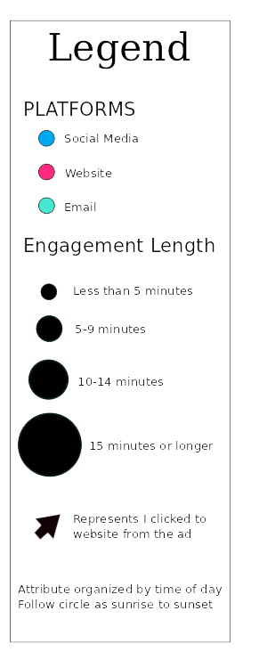

Introduction
Marketing, its a common factor in our every day life. But has marketing gotten so constant that you don’t even notice anymore? Between email ads, promoted social posts, banner ads and more, almost every time we are on the internet we are bound to see a brand pushing its message or products on us. With all these ads, consumers are often faced with what is considered “clutter.” They see so many ads every day that they tune them out, making it harder for marketers to push through and stand out. I decided to test this theory out, was I really tuning out online ads, and if not how many was I truly interacting with everyday.
Data Collection
A Week Long Process
The process of collecting my data was an all day affair for one whole week. Every time I noticed an ad or interacted with it I would detail the interaction I had with that advertisement in terms of: time, message content, brand, industry, if I clicked on the website, what was my rationale, how long did I interact and how did I receive the advertisement (device, platform and delivery).
As you can imagine it was at times a painstaking process to collect this all, but through perseverance I managed to make it through the week and discovered some interesting correlations in my data. The most interesting and prevalent of which was, Time. When I state time, I am referring to the time of day I would be interacting with an advertisement.
What Does this mean
Think of it as a clock. By the notches, you can understand the temporal charts relation to time.